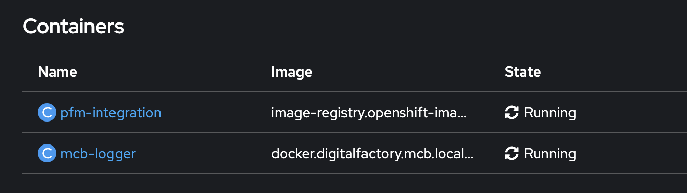
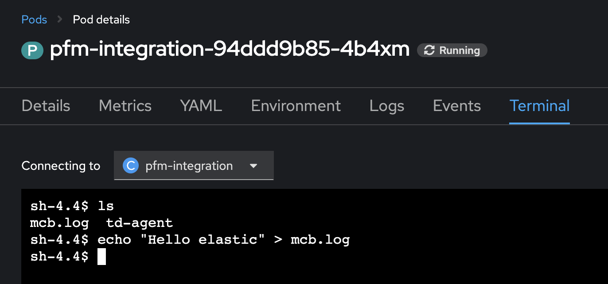
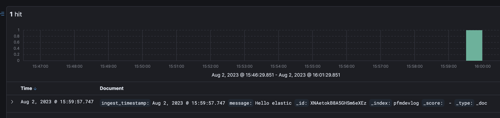

<!DOCTYPE html>


<html lang="en">
  

    <head>
      <meta charset="utf-8" />
       
      <meta name="keywords" content="agile, tdd, software engineering" />
       
      <meta
        name="viewport"
        content="width=device-width, initial-scale=1, maximum-scale=1"
      />
      
      <title>Sidecar Logging in Openshift with Fluentd and Elasticsearch |  nick dot blog</title>
  <meta name="generator" content="hexo-theme-ayer">
      
      <link rel="shortcut icon" href="/favicon.ico" />
       
<link rel="stylesheet" href="/dist/main.css">

      
<link rel="stylesheet" href="/css/fonts/remixicon.css">

      
<link rel="stylesheet" href="/css/custom.css">
 
      <script src="https://cdn.staticfile.org/pace/1.2.4/pace.min.js"></script>
       
<!-- Global site tag (gtag.js) - Google Analytics -->
<script async src="https://www.googletagmanager.com/gtag/js?id=G-KXJW9BVBJ4"></script>
<script>
  window.dataLayer = window.dataLayer || [];
  function gtag(){dataLayer.push(arguments);}
  gtag('js', new Date());
  gtag('config', 'G-KXJW9BVBJ4');
</script>

 

      <link
        rel="stylesheet"
        href="https://cdn.jsdelivr.net/npm/@sweetalert2/theme-bulma@5.0.1/bulma.min.css"
      />
      <script src="https://cdn.jsdelivr.net/npm/sweetalert2@11.0.19/dist/sweetalert2.min.js"></script>

      <!-- mermaid -->
      
      <style>
        .swal2-styled.swal2-confirm {
          font-size: 1.6rem;
        }
      </style>
    <link rel="alternate" href="/atom.xml" title="nick dot blog" type="application/atom+xml">
</head>
  </html>
</html>


<body>
  <div id="app">
    
      
    <main class="content on">
      <section class="outer">
  <article
  id="post-sidecar-logging"
  class="article article-type-post"
  itemscope
  itemprop="blogPost"
  data-scroll-reveal
>
  <div class="article-inner">
    
    <header class="article-header">
       
<h1 class="article-title sea-center" style="border-left:0" itemprop="name">
  Sidecar Logging in Openshift with Fluentd and Elasticsearch
</h1>
 

      
    </header>
     
    <div class="article-meta">
      <a href="/2023/08/05/sidecar-logging/" class="article-date">
  <time datetime="2023-08-05T06:13:24.000Z" itemprop="datePublished">2023-08-05</time>
</a>   
<div class="word_count">
    <span class="post-time">
        <span class="post-meta-item-icon">
            <i class="ri-quill-pen-line"></i>
            <span class="post-meta-item-text"> Word count:</span>
            <span class="post-count">964</span>
        </span>
    </span>

    <span class="post-time">
        &nbsp; | &nbsp;
        <span class="post-meta-item-icon">
            <i class="ri-book-open-line"></i>
            <span class="post-meta-item-text"> Reading time≈</span>
            <span class="post-count">6 min</span>
        </span>
    </span>
</div>
 
    </div>
      
    <div class="tocbot"></div>


  
    <div class="article-entry" itemprop="articleBody">
       
  <p>We use Elasticsearch for logging in our Openshift environments. This means that each application needs to figure out how to aggregate their logs and ship them to Elasticsearch. This duplication of effort is wasteful and increases maintenance costs as a change at Elasticsearch level must then be absorbed by each application. This approach also amplifies the impact of a security vulnerability such as the recent <a target="_blank" rel="noopener" href="https://nvd.nist.gov/vuln/detail/CVE-2021-44228">Log4j</a> vulnerability in that it requires patching in multiple places. One solution would be to have a single ‘certified’ logging library however we would need one for each technology stack we use. There is another way however - the sidecar deployment.</p>
<p>Kubernetes (k8s) allows for multiple containers to run in the same pod. These containers can share resources and dependencies, communicate with one another, and coordinate when and how they are terminated. In the ‘Sidecar Deployment’ we have one container providing a service for another. In our case what we are looking for is that the main application writes it’s logs to file and the sidecar then manages the process of shipping the logs to Elasticsearch.</p>
<p>The solution will look like this:</p>
<iframe frameborder="0" style="width:100%;height:400px;" src="https://viewer.diagrams.net/?highlight=0000ff&nav=1#R1Zddk5owFIZ%2FjZftQPADL%2F3cbWtbZ%2BzMuledLBwhbSRMCAr765tIICCu63bs1L0y581JJO85Dx8dZ7LN7jiOw6%2FMB9pBlp91nGkHIRt1kfxRSl4oA3dYCAEnvk4ywoo8gxYtrabEh6SRKBijgsRN0WNRBJ5oaJhztm%2BmbRht%2FmuMA2gJKw%2FTtvpAfBEWqtuzjH4PJAjLf7YtPbPFZbIWkhD7bF%2BTnFnHmXDGRDHaZhOgyrzSl2Ld%2FIXZ6sI4ROKSBaOpn%2FX5eL1Zfrv%2F%2BeM5%2FzRnnz%2BUNu8wTfWJv7grKSyZry9b5KUXnKWRD2o7u%2BOM9yERsIqxp2b3svpSC8WW6ukdcEGkjyNKgkhqgqmE9kXrc6h0yGqSPsQdsC0InsuUcrZ0WHeU3dfx3tQHuVoLa7VBZdGw7omg2tvYJgfauTe46LasAl92kQ4ZFyELWITpzKhjY6YlI5OzYMqog4W%2FQIhcI4FTwZoGQ0bEujZ%2BVFt97OlomumdD0FeBpE87roe1Fap0Cw7RI11S%2BBE%2BgVciy%2FWMmEp9%2BBc12mQMQ9AnMkbFHnKzLOdwYFiQXZNZK9e5bJTDSoLFgQkCqQ4YZHAJJLeHHfCK5jgJC5uWxuSqW64BiGo3yQEWW1CKorqhFTi1b3r%2Fk9CDBWPtZmbJgRdSIhzU4SgFiGjOL41Omx0c3T0383zQwbHTW6IMZBUnJ0h5u%2FhcC6Ew74pOJxTjw8pzIms53H95ctirIZeToksM3def%2BF6Khpi8VQJ2PsdHNrkeyrkNqD1pOgIu3elp43d5Mmx2zz1T%2BDk%2FiuaBi2jZxQn8mU0Acy98D173UWDo3tXr%2BX18ITXw7d7LUPzbXKYq33hObM%2F"></iframe>

<p>This approach means that we can setup our logging container once and then use it with all of our application containers, regardless of the technology stack. In addition we can inject the sidecar via our Policy Framework when a pod is deployed. So even if the team forget to enable logging it will be there automatically. Lastly this provides isolation so that if the logging process fails the main application can continue working.</p>
<h1 id="Logging-Container"><a href="#Logging-Container" class="headerlink" title="Logging Container"></a>Logging Container</h1><p>I’m going to use Fluentd to process the logs and send them to Elasticsearch. To do this I need to add the Elasticsearch plugin to the Fluentd Docker image and add my config file.</p>
<figure class="highlight plaintext"><table><tr><td class="gutter"><pre><span class="line">1</span><br><span class="line">2</span><br><span class="line">3</span><br><span class="line">4</span><br><span class="line">5</span><br><span class="line">6</span><br><span class="line">7</span><br><span class="line">8</span><br><span class="line">9</span><br><span class="line">10</span><br></pre></td><td class="code"><pre><span class="line">FROM fluent/fluentd:edge-debian</span><br><span class="line">USER root</span><br><span class="line">RUN [&quot;gem&quot;, &quot;install&quot;, &quot;fluent-plugin-elasticsearch&quot;, &quot;--no-document&quot;, &quot;--version&quot;, &quot;5.3.0&quot;]</span><br><span class="line"></span><br><span class="line">COPY fluent.conf /fluentd/etc/</span><br><span class="line"></span><br><span class="line">COPY entrypoint.sh /bin/</span><br><span class="line">RUN chmod +x /bin/entrypoint.sh</span><br><span class="line"></span><br><span class="line">USER fluent</span><br></pre></td></tr></table></figure>

<h1 id="Fluentd-Configuration"><a href="#Fluentd-Configuration" class="headerlink" title="Fluentd Configuration"></a>Fluentd Configuration</h1><p>I’m starting with a minimal configuration. We tail the log at ‘var&#x2F;log&#x2F;mcb.log’ and tag the lines with ‘mcb’. Fluent will then match any log tagged with ‘mcb’ and send it to Elasticsearch.</p>
<p>I ran into some challenges here as I needed a specific index name to be used. Whilst I set the index_name property this did not seem to have any effect. The culprit was the logstash_format property. If this is set to ‘true’ then index_name is ignored. Switching to ‘false’ fixed the problem. </p>
<blockquote>
<p>If you do run into problems set the @log_level to debug at plugin level. In addition setting  with_transport_log to true will allow you to see the detailed trace associated with how the data is sent to Elastic.</p>
</blockquote>
<figure class="highlight plaintext"><table><tr><td class="gutter"><pre><span class="line">1</span><br><span class="line">2</span><br><span class="line">3</span><br><span class="line">4</span><br><span class="line">5</span><br><span class="line">6</span><br><span class="line">7</span><br><span class="line">8</span><br><span class="line">9</span><br><span class="line">10</span><br><span class="line">11</span><br><span class="line">12</span><br><span class="line">13</span><br><span class="line">14</span><br><span class="line">15</span><br><span class="line">16</span><br><span class="line">17</span><br><span class="line">18</span><br><span class="line">19</span><br><span class="line">20</span><br><span class="line">21</span><br><span class="line">22</span><br><span class="line">23</span><br><span class="line">24</span><br></pre></td><td class="code"><pre><span class="line">&lt;source&gt;</span><br><span class="line">  @type tail</span><br><span class="line">  path /var/log/mcb.log</span><br><span class="line">  pos_file /var/log/td-agent/mcb.log.pos</span><br><span class="line">  tag mcb</span><br><span class="line">  &lt;parse&gt;</span><br><span class="line">    @type none</span><br><span class="line">  &lt;/parse&gt;</span><br><span class="line">&lt;/source&gt;</span><br><span class="line"></span><br><span class="line">&lt;match mcb&gt;</span><br><span class="line">  @type elasticsearch</span><br><span class="line">  @log_level debug</span><br><span class="line">  host es-dev.mcb.local</span><br><span class="line">  port 9200</span><br><span class="line">  user elastic</span><br><span class="line">  password elastic</span><br><span class="line">  scheme https</span><br><span class="line">  ssl_verify false</span><br><span class="line">  logstash_format false</span><br><span class="line">  index_name pfmdevlog</span><br><span class="line">  with_transporter_log true</span><br><span class="line">&lt;/match&gt;</span><br><span class="line"></span><br></pre></td></tr></table></figure>
<h1 id="Configuring-the-sidecar"><a href="#Configuring-the-sidecar" class="headerlink" title="Configuring the sidecar"></a>Configuring the sidecar</h1><p>We start by creating a volume for the containers to share data. This can be added to your K8S Deployment as follows:</p>
<figure class="highlight plaintext"><table><tr><td class="gutter"><pre><span class="line">1</span><br><span class="line">2</span><br><span class="line">3</span><br><span class="line">4</span><br></pre></td><td class="code"><pre><span class="line">volumes:</span><br><span class="line">  - name: applog</span><br><span class="line">    emptyDir: &#123;&#125;</span><br><span class="line"></span><br></pre></td></tr></table></figure>
<p>An <a target="_blank" rel="noopener" href="https://kubernetes.io/docs/concepts/storage/volumes/">emptyDir</a> volume is first created when a Pod is assigned to a node, and exists as long as that Pod is running on that node. </p>
<p>Next we add the sidecar container to the deployment:</p>
<figure class="highlight plaintext"><table><tr><td class="gutter"><pre><span class="line">1</span><br><span class="line">2</span><br><span class="line">3</span><br><span class="line">4</span><br><span class="line">5</span><br><span class="line">6</span><br><span class="line">7</span><br></pre></td><td class="code"><pre><span class="line">containers:</span><br><span class="line">  - name: app-container</span><br><span class="line">  ...</span><br><span class="line">  - name: mcb-logger</span><br><span class="line">    image: &gt;-</span><br><span class="line">      docker.digitalfactory.mcb.local/mcb-sre/mcb-logger@sha256:cfd8bdd41f4fa5fbe031856444a1d272a61e7f70d6f1e42d435a61c8f856ba6d</span><br><span class="line"></span><br></pre></td></tr></table></figure>
<p>Finally we add a volumeMount to both containers:</p>
<figure class="highlight plaintext"><table><tr><td class="gutter"><pre><span class="line">1</span><br><span class="line">2</span><br><span class="line">3</span><br></pre></td><td class="code"><pre><span class="line">volumeMounts:</span><br><span class="line">  - name: applog</span><br><span class="line">    mountPath: /var/log/</span><br></pre></td></tr></table></figure>

<p>In summary we now have 2 containers running in the pod who have a shared directory located at ‘&#x2F;var&#x2F;log’.</p>
<h1 id="Use-of-Environment-Variables"><a href="#Use-of-Environment-Variables" class="headerlink" title="Use of Environment Variables"></a>Use of Environment Variables</h1><p>To this point I’ve hardcoded the Fluentd settings. This will not work for everyone as we use different indexes for the various applications. I need to allow each application to inject these settings when the pod is started. Fortunately Fluentd allows you to execute arbitrary Ruby code when the configuration file is parsed. This allows us the opportunity to replace values from the local ennvironment. Here’s the updated configuration:</p>
<figure class="highlight plaintext"><table><tr><td class="gutter"><pre><span class="line">1</span><br><span class="line">2</span><br><span class="line">3</span><br><span class="line">4</span><br><span class="line">5</span><br><span class="line">6</span><br><span class="line">7</span><br><span class="line">8</span><br><span class="line">9</span><br><span class="line">10</span><br><span class="line">11</span><br><span class="line">12</span><br><span class="line">13</span><br><span class="line">14</span><br><span class="line">15</span><br><span class="line">16</span><br><span class="line">17</span><br><span class="line">18</span><br><span class="line">19</span><br><span class="line">20</span><br><span class="line">21</span><br><span class="line">22</span><br><span class="line">23</span><br><span class="line">24</span><br></pre></td><td class="code"><pre><span class="line">&lt;source&gt;</span><br><span class="line">  @type tail</span><br><span class="line">  path &quot;#&#123;ENV[&#x27;LOG_FILE&#x27;] || &#x27;/var/log/mcb.log&#x27;&#125;&quot;</span><br><span class="line">  pos_file /var/log/td-agent/mcb.log.pos</span><br><span class="line">  tag mcb</span><br><span class="line">  &lt;parse&gt;</span><br><span class="line">    @type none</span><br><span class="line">  &lt;/parse&gt;</span><br><span class="line">&lt;/source&gt;</span><br><span class="line"></span><br><span class="line">&lt;match mcb&gt;</span><br><span class="line">  @type elasticsearch</span><br><span class="line">  @log_level &quot;#&#123;ENV[&#x27;LOG_LEVEL&#x27;] || &#x27;debug&#x27;&#125;&quot;</span><br><span class="line">  host &quot;#&#123;ENV[&#x27;ES_HOST&#x27;] || &#x27;es-dev.mcb.local&#x27;&#125;&quot;</span><br><span class="line">  port &quot;#&#123;ENV[&#x27;ES_PORT&#x27;] || 9200&#125;&quot;</span><br><span class="line">  user &quot;#&#123;ENV[&#x27;ES_USER&#x27;] || &#x27;elastic&#x27;&#125;&quot;</span><br><span class="line">  password &quot;#&#123;ENV[&#x27;ES_PASSWORD&#x27;] || &#x27;elastic&#x27;&#125;&quot;</span><br><span class="line">  scheme https</span><br><span class="line">  ssl_verify false</span><br><span class="line">  logstash_format false</span><br><span class="line">  index_name pfmdevlog</span><br><span class="line">  with_transporter_log true</span><br><span class="line">&lt;/match&gt;</span><br><span class="line"></span><br></pre></td></tr></table></figure>

<h1 id="Testing"><a href="#Testing" class="headerlink" title="Testing"></a>Testing</h1><p>Once the pod is started we can now see both containers running:</p>


<p>If we then jump to the application container we can test by manually adding a log entry:</p>


<p>The Fluentd running in the logging container takes this log line and sends it to Elasticsearch.</p>


<h1 id="Next-steps"><a href="#Next-steps" class="headerlink" title="Next steps"></a>Next steps</h1><p>At present the Fluentd configuration is minimal so I’ll need to provide more flexibility. The simplest method would be to use a ConfigMap to replace the Fluentd configuration entirely. There may be other options - let me know in the comments if you have a suggestion. I also need to get up our policy framework to automatically inject the sidecar if it’s not part of the applications configuration.</p>
 
      <!-- reward -->
      
    </div>
    

    <!-- copyright -->
    
    <div class="declare">
      <ul class="post-copyright">
        <li>
          <i class="ri-copyright-line"></i>
          <strong>Copyright： </strong>
          
          Copyright is owned by the author. For commercial reprints, please contact the author for authorization. For non-commercial reprints, please indicate the source.
          
        </li>
      </ul>
    </div>
    
    <footer class="article-footer">
       
  <ul class="article-tag-list" itemprop="keywords"><li class="article-tag-list-item"><a class="article-tag-list-link" href="/tags/devops/" rel="tag">devops</a></li></ul>

    </footer>
  </div>

   
  <nav class="article-nav">
    
      <a href="/2023/09/02/camel-sftp-azure/" class="article-nav-link">
        <strong class="article-nav-caption">Previous Post</strong>
        <div class="article-nav-title">
          
            Integrating Azure Storage and SFTP with Apache Camel
          
        </div>
      </a>
    
    
      <a href="/2023/07/16/krakend-response/" class="article-nav-link">
        <strong class="article-nav-caption">Next Post</strong>
        <div class="article-nav-title">Request/Response Shaping with KrakenD</div>
      </a>
    
  </nav>

  
   
<div class="gitalk" id="gitalk-container"></div>

<link rel="stylesheet" href="https://cdn.staticfile.org/gitalk/1.7.2/gitalk.min.css">


<script src="https://cdn.staticfile.org/gitalk/1.7.2/gitalk.min.js"></script>


<script src="https://cdn.staticfile.org/blueimp-md5/2.19.0/js/md5.min.js"></script>

<script type="text/javascript">
  var gitalk = new Gitalk({
    clientID: '8318211c28156a054b60',
    clientSecret: 'a3e7c2c22e61867951cbca3c52fbcc22f43dcfb8',
    repo: 'BlogComments',
    owner: 'nickmza',
    admin: ['nickmza'],
    // id: location.pathname,      // Ensure uniqueness and length less than 50
    id: md5(location.pathname),
    distractionFreeMode: false,  // Facebook-like distraction free mode
    pagerDirection: 'last'
  })

  gitalk.render('gitalk-container')
</script>

  
   
    <script src="https://cdn.staticfile.org/twikoo/1.4.18/twikoo.all.min.js"></script>
    <div id="twikoo" class="twikoo"></div>
    <script>
        twikoo.init({
            envId: ""
        })
    </script>
 
</article>

</section>
      <footer class="footer">
  <div class="outer">
    <ul>
      <li>
        Copyrights &copy;
        2015-2024
        <i class="ri-heart-fill heart_icon"></i> Nick Mckenzie
      </li>
    </ul>
    <ul>
      <li>
        
      </li>
    </ul>
    <ul>
      <li>
        
      </li>
    </ul>
    <ul>
      
    </ul>
    <ul>
      
    </ul>
    <ul>
      <li>
        <!-- cnzz统计 -->
        
        <script type="text/javascript" src='https://s9.cnzz.com/z_stat.php?id=1278069914&amp;web_id=1278069914'></script>
        
      </li>
    </ul>
  </div>
</footer>    
    </main>
    <div class="float_btns">
      <div class="totop" id="totop">
  <i class="ri-arrow-up-line"></i>
</div>

<div class="todark" id="todark">
  <i class="ri-moon-line"></i>
</div>

    </div>
    <aside class="sidebar on">
      <button class="navbar-toggle"></button>
<nav class="navbar">
  
  <div class="logo">
    <a href="/"></a>
  </div>
  
  <ul class="nav nav-main">
    
    <li class="nav-item">
      <a class="nav-item-link" href="/">Home</a>
    </li>
    
    <li class="nav-item">
      <a class="nav-item-link" href="/archives">Archives</a>
    </li>
    
    <li class="nav-item">
      <a class="nav-item-link" href="/categories">Categories</a>
    </li>
    
    <li class="nav-item">
      <a class="nav-item-link" href="/tags">Tags</a>
    </li>
    
    <li class="nav-item">
      <a class="nav-item-link" href="/Resources">Resources</a>
    </li>
    
    <li class="nav-item">
      <a class="nav-item-link" href="/about">About</a>
    </li>
    
  </ul>
</nav>
<nav class="navbar navbar-bottom">
  <ul class="nav">
    <li class="nav-item">
      
      <a class="nav-item-link nav-item-search"  title="Search">
        <i class="ri-search-line"></i>
      </a>
      
      
      <a class="nav-item-link" target="_blank" href="/atom.xml" title="RSS Feed">
        <i class="ri-rss-line"></i>
      </a>
      
    </li>
  </ul>
</nav>
<div class="search-form-wrap">
  <div class="local-search local-search-plugin">
  <input type="search" id="local-search-input" class="local-search-input" placeholder="Search...">
  <div id="local-search-result" class="local-search-result"></div>
</div>
</div>
    </aside>
    <div id="mask"></div>

<!-- #reward -->
<div id="reward">
  <span class="close"><i class="ri-close-line"></i></span>
  <p class="reward-p"><i class="ri-cup-line"></i>请我喝杯咖啡吧~</p>
  <div class="reward-box">
    
    <div class="reward-item">
      
      <span class="reward-type">支付宝</span>
    </div>
    
    
    <div class="reward-item">
      
      <span class="reward-type">微信</span>
    </div>
    
  </div>
</div>
    
<script src="/js/jquery-3.6.0.min.js"></script>
 
<script src="/js/lazyload.min.js"></script>

<!-- Tocbot -->
 
<script src="/js/tocbot.min.js"></script>

<script>
  tocbot.init({
    tocSelector: ".tocbot",
    contentSelector: ".article-entry",
    headingSelector: "h1, h2, h3, h4, h5, h6",
    hasInnerContainers: true,
    scrollSmooth: true,
    scrollContainer: "main",
    positionFixedSelector: ".tocbot",
    positionFixedClass: "is-position-fixed",
    fixedSidebarOffset: "auto",
  });
</script>

<script src="https://cdn.staticfile.org/jquery-modal/0.9.2/jquery.modal.min.js"></script>
<link
  rel="stylesheet"
  href="https://cdn.staticfile.org/jquery-modal/0.9.2/jquery.modal.min.css"
/>
<script src="https://cdn.staticfile.org/justifiedGallery/3.8.1/js/jquery.justifiedGallery.min.js"></script>

<script src="/dist/main.js"></script>

<!-- ImageViewer -->
 <!-- Root element of PhotoSwipe. Must have class pswp. -->
<div class="pswp" tabindex="-1" role="dialog" aria-hidden="true">

    <!-- Background of PhotoSwipe. 
         It's a separate element as animating opacity is faster than rgba(). -->
    <div class="pswp__bg"></div>

    <!-- Slides wrapper with overflow:hidden. -->
    <div class="pswp__scroll-wrap">

        <!-- Container that holds slides. 
            PhotoSwipe keeps only 3 of them in the DOM to save memory.
            Don't modify these 3 pswp__item elements, data is added later on. -->
        <div class="pswp__container">
            <div class="pswp__item"></div>
            <div class="pswp__item"></div>
            <div class="pswp__item"></div>
        </div>

        <!-- Default (PhotoSwipeUI_Default) interface on top of sliding area. Can be changed. -->
        <div class="pswp__ui pswp__ui--hidden">

            <div class="pswp__top-bar">

                <!--  Controls are self-explanatory. Order can be changed. -->

                <div class="pswp__counter"></div>

                <button class="pswp__button pswp__button--close" title="Close (Esc)"></button>

                <button class="pswp__button pswp__button--share" style="display:none" title="Share"></button>

                <button class="pswp__button pswp__button--fs" title="Toggle fullscreen"></button>

                <button class="pswp__button pswp__button--zoom" title="Zoom in/out"></button>

                <!-- Preloader demo http://codepen.io/dimsemenov/pen/yyBWoR -->
                <!-- element will get class pswp__preloader--active when preloader is running -->
                <div class="pswp__preloader">
                    <div class="pswp__preloader__icn">
                        <div class="pswp__preloader__cut">
                            <div class="pswp__preloader__donut"></div>
                        </div>
                    </div>
                </div>
            </div>

            <div class="pswp__share-modal pswp__share-modal--hidden pswp__single-tap">
                <div class="pswp__share-tooltip"></div>
            </div>

            <button class="pswp__button pswp__button--arrow--left" title="Previous (arrow left)">
            </button>

            <button class="pswp__button pswp__button--arrow--right" title="Next (arrow right)">
            </button>

            <div class="pswp__caption">
                <div class="pswp__caption__center"></div>
            </div>

        </div>

    </div>

</div>

<link rel="stylesheet" href="https://cdn.staticfile.org/photoswipe/4.1.3/photoswipe.min.css">
<link rel="stylesheet" href="https://cdn.staticfile.org/photoswipe/4.1.3/default-skin/default-skin.min.css">
<script src="https://cdn.staticfile.org/photoswipe/4.1.3/photoswipe.min.js"></script>
<script src="https://cdn.staticfile.org/photoswipe/4.1.3/photoswipe-ui-default.min.js"></script>

<script>
    function viewer_init() {
        let pswpElement = document.querySelectorAll('.pswp')[0];
        let $imgArr = document.querySelectorAll(('.article-entry img:not(.reward-img)'))

        $imgArr.forEach(($em, i) => {
            $em.onclick = () => {
                // slider展开状态
                // todo: 这样不好，后面改成状态
                if (document.querySelector('.left-col.show')) return
                let items = []
                $imgArr.forEach(($em2, i2) => {
                    let img = $em2.getAttribute('data-idx', i2)
                    let src = $em2.getAttribute('data-target') || $em2.getAttribute('src')
                    let title = $em2.getAttribute('alt')
                    // 获得原图尺寸
                    const image = new Image()
                    image.src = src
                    items.push({
                        src: src,
                        w: image.width || $em2.width,
                        h: image.height || $em2.height,
                        title: title
                    })
                })
                var gallery = new PhotoSwipe(pswpElement, PhotoSwipeUI_Default, items, {
                    index: parseInt(i)
                });
                gallery.init()
            }
        })
    }
    viewer_init()
</script> 
<!-- MathJax -->

<!-- Katex -->

<!-- busuanzi  -->

<!-- ClickLove -->

<!-- ClickBoom1 -->

<!-- ClickBoom2 -->

<!-- CodeCopy -->
 
<link rel="stylesheet" href="/css/clipboard.css">
 <script src="https://cdn.staticfile.org/clipboard.js/2.0.10/clipboard.min.js"></script>
<script>
  function wait(callback, seconds) {
    var timelag = null;
    timelag = window.setTimeout(callback, seconds);
  }
  !function (e, t, a) {
    var initCopyCode = function(){
      var copyHtml = '';
      copyHtml += '<button class="btn-copy" data-clipboard-snippet="">';
      copyHtml += '<i class="ri-file-copy-2-line"></i><span>COPY</span>';
      copyHtml += '</button>';
      $(".highlight .code pre").before(copyHtml);
      $(".article pre code").before(copyHtml);
      var clipboard = new ClipboardJS('.btn-copy', {
        target: function(trigger) {
          return trigger.nextElementSibling;
        }
      });
      clipboard.on('success', function(e) {
        let $btn = $(e.trigger);
        $btn.addClass('copied');
        let $icon = $($btn.find('i'));
        $icon.removeClass('ri-file-copy-2-line');
        $icon.addClass('ri-checkbox-circle-line');
        let $span = $($btn.find('span'));
        $span[0].innerText = 'COPIED';
        
        wait(function () { // 等待两秒钟后恢复
          $icon.removeClass('ri-checkbox-circle-line');
          $icon.addClass('ri-file-copy-2-line');
          $span[0].innerText = 'COPY';
        }, 2000);
      });
      clipboard.on('error', function(e) {
        e.clearSelection();
        let $btn = $(e.trigger);
        $btn.addClass('copy-failed');
        let $icon = $($btn.find('i'));
        $icon.removeClass('ri-file-copy-2-line');
        $icon.addClass('ri-time-line');
        let $span = $($btn.find('span'));
        $span[0].innerText = 'COPY FAILED';
        
        wait(function () { // 等待两秒钟后恢复
          $icon.removeClass('ri-time-line');
          $icon.addClass('ri-file-copy-2-line');
          $span[0].innerText = 'COPY';
        }, 2000);
      });
    }
    initCopyCode();
  }(window, document);
</script>
 
<!-- CanvasBackground -->

<script>
  if (window.mermaid) {
    mermaid.initialize({ theme: "forest" });
  }
</script>


    
    

  </div>
</body>

</html>